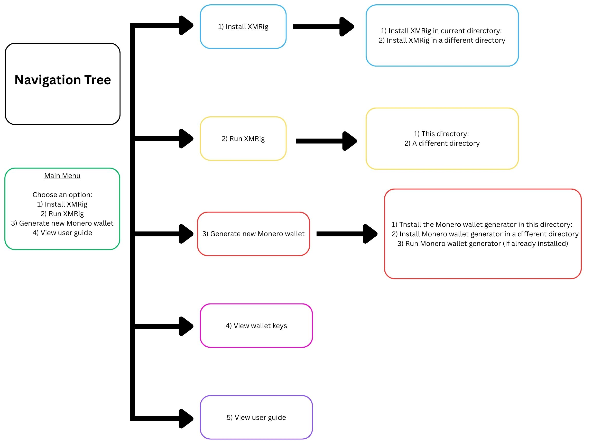
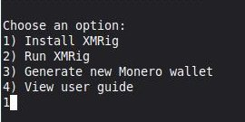
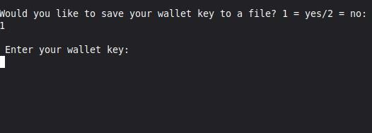
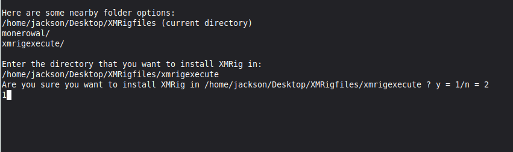

Launching XMRig AUT:
Before you can launch XMRig AUT, you may need to enable execute permissions for the file. To do that run this command:
chmod +x xmrig_automation_utility_toolAUT.sh
To launch XMRig AUT, run this command:
sudo ./xmrig_automation_utility_toolAUT.sh
Selecting Options:
To select the option you want, enter the designated number that is associated with that option. For example, if you want to Install XMRig, enter "1" and press enter.


